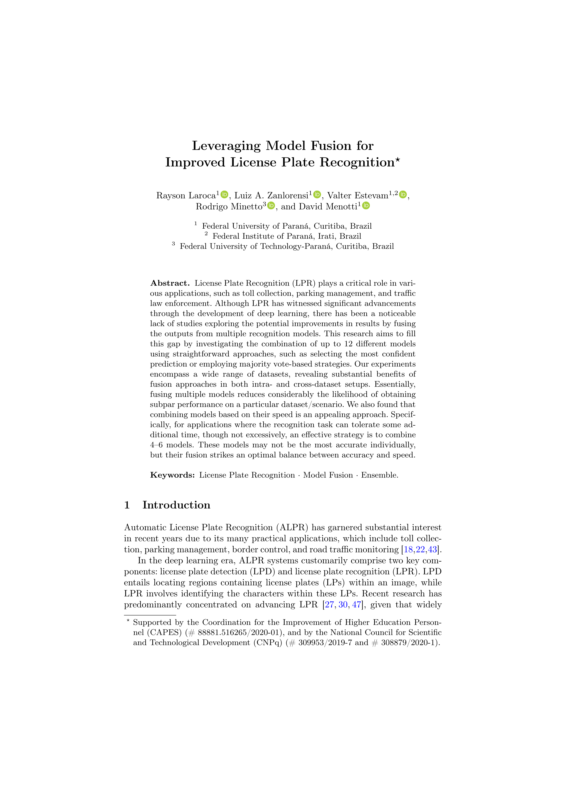

Improved License Plate Recognition
|
|
|
|
|
|
1 Federal University of Paraná, Curitiba, Brazil
2 Federal Institute of Paraná, Irati, Brazil
3 Federal University of Technology-Paraná, Curitiba, Brazil
CIARP 2023
|
|
Predictions obtained in eight LP images by five models individually and through the best fusion approach (majority vote with ties broken by selecting the prediction with the highest confidence value). The confidence for each prediction is indicated in parentheses, and any errors are highlighted in red. |
Abstract
License Plate Recognition (LPR) plays a critical role in various applications, such as toll collection, parking management, and traffic law enforcement. Although LPR has witnessed significant advancements through the development of deep learning, there has been a noticeable lack of studies exploring the potential improvements in results by fusing the outputs from multiple recognition models. This research aims to fill this gap by investigating the combination of up to 12 different models using straightforward approaches, such as selecting the most confident prediction and employing majority vote-based strategies. Our experiments encompass a wide range of datasets, revealing substantial benefits of fusion approaches in both intra- and cross-dataset setups. Essentially, fusing multiple models reduces considerably the likelihood of obtaining subpar performance on a particular dataset/scenario. We also found that combining models based on their speed is an appealing approach. Specifically, for applications where the recognition task can tolerate some additional time, though not excessively, an effective strategy is to combine 4–6 fast models. These models may not be the most accurate individually, but their fusion strikes an optimal balance between accuracy and speed.
Paper
|  | Rayson Laroca, Luiz A. Zanlorensi, Valter Estevam, Rodrigo Minetto, David Menotti Leveraging Model Fusion for Improved License Plate Recognition Iberoamerican Congress on Pattern Recognition (CIARP), pp. 60-75, Nov 2023. |
In summary, this paper has two main contributions:
|
|
|
|
|
Related Work
This research was motivated by the observation that while the field of License Plate Recognition (LPR) has made substantial progress due to the development and application of deep learning-based models, there has been a noticeable lack of studies thoroughly examining the potential improvements in results by fusing the outputs from multiple recognition models. Although a few studies explored model fusion to improve LPR results (e.g., [1, 2]), our approach sets itself apart by exploring a wide range of models and datasets in the experiments.
[1] – D. M. F. Izidio, A. P. A. Ferreira, H. R. Medeiros, and E. N. S. Barros, “An embedded automatic license plate recognition system using deep learning,” Design Automation for Embedded Systems, vol. 24, no. 1, pp. 24-43, 2020. [Springer]
[2] – F. Schirrmacher, B. Lorch, A. Maier, and C. Riess, “Benchmarking Probabilistic Deep Learning Methods for License Plate Recognition,” IEEE Transactions on Intelligent Transportation Systems, vol. 24, no. 9, pp. 9203-9216, 2023. [IEEE Xplore]
You may also be interested in our previous research [3, 4], where we investigated dataset bias within the LPR context:
[3] – R. Laroca, M. Santos, V. Estevam, E. Luz, and D. Menotti, “A first look at dataset bias in license plate recognition,” in Conference on Graphics, Patterns and Images (SIBGRAPI), pp. 234-239, Oct 2022. [IEEE Xplore] [arXiv]
[4] – R. Laroca, V. Estevam, A. S. Britto Jr., R. Minetto, and D. Menotti, “Do We Train on Test Data? The Impact of Near-Duplicates on License Plate Recognition,” in International Joint Conference on Neural Networks (IJCNN), pp. 1-8, June 2023. [IEEE Xplore] [arXiv]
Acknowledgments
This work was supported in part by the Coordination for the Improvement of Higher Education Personnel (CAPES), and in part by the National Council for Scientific and Technological Development (CNPq). The Quadro RTX 8000 GPU used for this research was donated by NVIDIA.